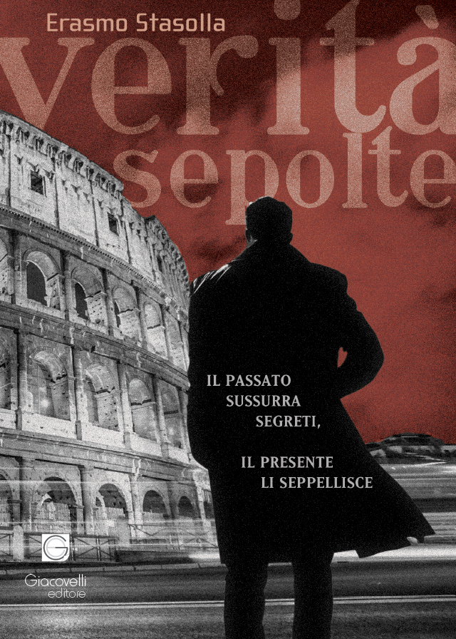

ANSA · Libri5 aprile 2025
Verità sepolte, nei misteri d’Italia per capire il presente
L’approfondimento dedicato al romanzo d’esordio e all’inchiesta del suo protagonista.
Il romanzo d’esordio di Erasmo Stasolla.

Il romanzo d’esordio · 2025Andrea Lorusso indaga su una metropolitana mai completata a Roma. Appalti fantasma e morti sospette lo conducono dentro un sistema che sa difendere i propri segreti. Mentre l’inchiesta si allarga, il prezzo della verità diventa sempre più personale.
Tra Roma, Bari e Palagianello, la sua ricerca attraversa anche una dimensione onirica: gli incontri immaginari con protagonisti della storia italiana intrecciano memoria civile e tensione narrativa. Al centro resta una scelta: fino a dove spingersi per raccontare ciò che altri vogliono nascondere?
L’approfondimento dedicato al romanzo d’esordio e all’inchiesta del suo protagonista.
Il racconto della serata al Castello Caracciolo e l’annuncio della presenza del libro al Salone di Torino 2025.
La presentazione a Palagianello: il programma, gli organizzatori e le voci della serata.